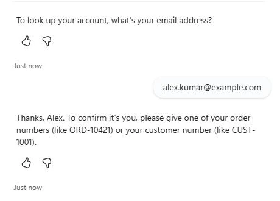
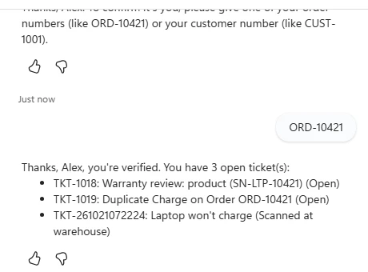

- Project deep dive
- Vink Customer Care Agent · Part 4 of 11
4 · Verifying the customer
Where this page fits
Highlighted boxes are what this page explains. The chain runs left to right, top row then bottom row.
Why verify, and why in a topic
- kind: BeginDialog # every account topic starts here
dialog: vin_CustomerCareAgent.topic.IdentifyCustomer
- kind: ConditionGroup
conditions:
- condition: =Global.CustomerVerified <> true
actions:
- kind: EndDialog # not verified: stop, show nothingEvery account topic starts with these lines. The instructions also say verify first (Part 2), but this guard is what makes it impossible to skip.
The verification path
Identify Customer


Inside the Find Customer flow
Find Customer, run twice for Alex
| Step | Call 1: email only | Call 2: email + ORD-10421 |
|---|---|---|
Find contact by toLower(trim(email)) | found | found |
Find order ORD-10421 owned by this contact | — (no number yet) | match |
| Status returned | NeedVerification | Verified |
| Open tickets summary | — | 3 tickets, as a bulleted list |
The order must belong to the same contact: the filter is vin_ordernumber eq 'ORD-10421' and _vin_customercontact_value eq <contact id>. Someone who knows Alex's email but not his order can't get in.
Wrong answers and new customers
Wrong order number
If the email isn't found, an adaptive card offers Yes, create my account or Try a different email. Registering calls Register Customer, which creates the contact and its CUST- number, so the customer can verify with it next time.
What verification leaves behind
| Global variable | Alex's value | Used by |
|---|---|---|
| CustomerVerified | true | Every account topic's guard |
| ContactId | Alex's contact GUID | All flows that read or write his data |
| CustomerFirstName / FullName | Alex / Alex Kumar | Greetings, cards |
| CustomerEmail | alex.kumar@example.com | Ticket confirmation email |
| IsVIP | No | Priority boost (Part 6) |
New to this? Start from the basics optional
Adaptive card: a small form or set of buttons inside the chat.
Common mistakes
- Verifying with email only.
- Matching an order number without checking it belongs to that customer.
- Unlimited retries.
- Re-verifying in every topic instead of using a global flag.